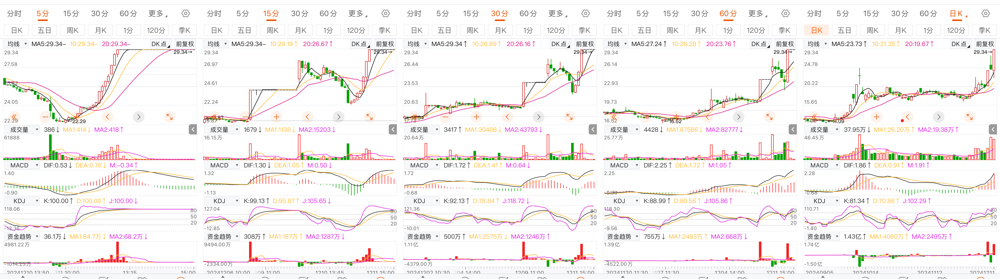
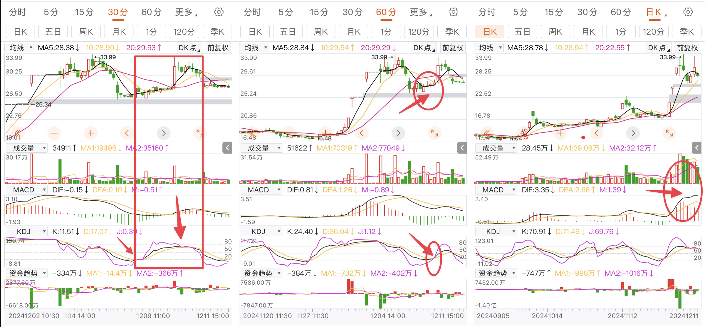
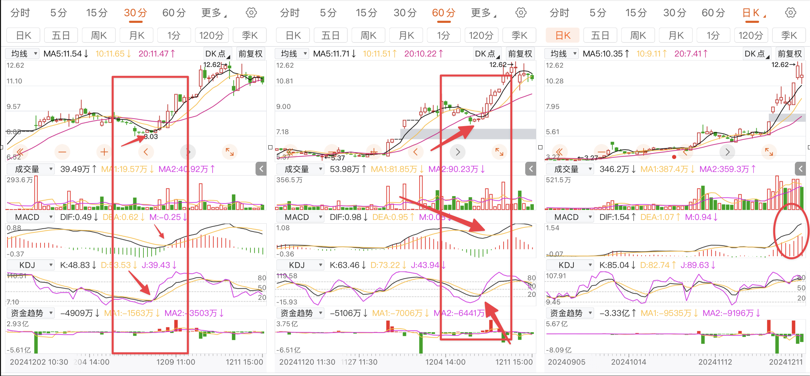

12月11日盘后心得——针对超大资金流入
12-15
股价的上涨，往往需要大资金的带动，买点，也应该是由大资金来引爆的，而且，具有隐蔽性，涨停，往往伴随着出货的开始
难得的一天，空仓了。确实，跟他人聊天，能够弥补忽略的细节。
12-11
靠语句盘中监控的弊端出现了，在大盘行情不好的时候，优质股往往伴随着大资金的深度介入——资金就像恶犬一般，哪有肉香味，一清二楚。是时候把资金加进来了。
针对的是日线级别的操作。
申昊科技

本级别的买点，卖点都在一起，不可跨级别看。金叉形成在收盘点，大概率第二天会高开套人，完美的金叉应该盘中产生。
金叉的先后顺序先满足大级别走势，在满足小级别走势。
肇民科技

肇民科技KDJ在60分钟金叉，但同时，30分钟走到了死叉，30分钟级别的MACD也展开了金叉，走势上来说是多中看空，冲高就要跑，这种走势一般不参与。
三丰智能

三丰智能的KDJ在60分钟和30分钟同频共振，MACD也保持相同节奏。